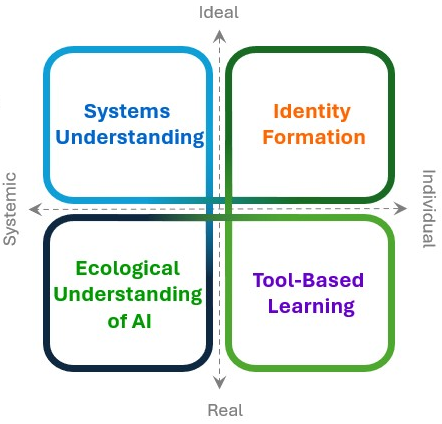

EcoAI Framework: A Pedagogical Model for the Anthropocene
The EcoAI Framework proposes an interdisciplinary approach to integrate Ecoliteracy and Artificial Intelligence (AI) into civic education in secondary schools, shaping a new generation of eco-technological citizens.
Research Objectives
- Explore students' perceptions of sustainability and AI.
- Analyze the intersection between environmental and digital literacy.
- Develop an integrated pedagogical model for civic education.
Research Questions
- How do students perceive the impact of AI on environmental issues?
- What is the level of ecoliteracy and environmental civic competences among young people?
- How do digital media influence ecological citizenship?
Theoretical Framework
- Eco-digital Posthumanism: Theoretical elaboration of the eco-digital posthumanist theory.
- Ecomedia Literacy: Critical analysis of the ecological impact of media technologies.
- Digital Civic Education and SDGs: National and international regulatory context of reference.
Scientific Foundations of the Framework
Below are available the theoretical foundation of the EcoAI Framework defined as Eco-digital Posthumanism and
the systematic and bibliometric review on Ecoliteracy and Social Media.
The first elaborates the epistemological and pedagogical framework that integrates posthumanism, ecoliteracy, and AI literacy, outlining the four quadrants of the framework.
It constitutes the conceptual reference underlying the domains and sub-domains, providing criteria of theoretical coherence and methodological rigor, and establishing the scientific and philosophical basis on which the entire EcoAI architecture is built.
The systematic and bibliometric review constitutes the theoretical-empirical basis of the EcoAI Framework.
It analyzes the international literature on ecoliteracy and digital media, providing validated indicators and a mapping of research trends, ensuring transparency, replicability, and a direct connection with the scientific community.
In the EcoAI framework, it contributes to defining the referential context for the domain
Identity Formation, with particular attention to the sub-domains
Ecodigital Positionality & Imaginaries and
Algorithmic Bias, Fairness & Representation.
The Four Quadrants of the EcoAI Framework
The framework is structured into four interconnected domains that guide the development of integrated eco-digital competences. Click on each quadrant to explore the details.
Go to the dedicated page with complete descriptions and rubrics.
Competence Development
The framework aligns EcoAI competences with the European GreenComp model, defining four levels of mastery. Select a competence to view the level descriptors.
Relationship between Quadrants and GreenComp Areas
Foundational frameworks for the development and assessment of EcoAI competences
The evaluative robustness of EcoAI is based on the deep integration with established standards of sustainability education and AI literacy. In particular, the framework takes GreenComp as its primary reference and integrates it with AI literacy models (Long & Magerko; AICOS; Generative AI Literacy) to achieve a multilayered assessment strategy combining qualitative depth and quantitative rigor.
GreenComp: European framework of competences for sustainability
GreenComp structures sustainability competence into four areas and twelve sub-competences (including: Systems thinking – G1, Critical thinking – G2, Agency – G7, Sustainability justice – G12). EcoAI explicitly adapts GreenComp, defining four levels of mastery – Basic, Intermediate, Advanced, Critical – and rubrics already contextualized to eco-digital scenarios. This correspondence provides a common language, recognized at European level, to describe competence progression, facilitating comparability and transferability of learning outcomes.
AI Literacy: Long & Magerko, AICOS and Generative AI Literacy
The framework integrates multiple models to fully cover the dimensions of AI literacy and Ministry guidelines for the introduction of Artificial Intelligence in schools. The model of Long & Magerko (Understanding, Interacting, Critiquing, Designing, Evaluating) is mapped onto EcoAI quadrants (e.g., Understanding → Systems Understanding; Interacting → Tool-Based Learning; Critiquing → Identity Formation; Designing → Hybrid modules; Evaluating → Digital ecosystems). AICOS provides a validated quantitative scale for measuring AI literacy (dimensions such as: understanding AI, working with AI, social impact, bias/fairness, decision and responsibility), useful as a psychometric benchmark to validate rubrics and questionnaires (Cronbach’s α > .8). Generative AI Literacy (Annapureddy et al.) specifically enriches the Tool-Based Learning domain with operational and reflective competences on generative systems.
The result is a multi-layer validation: GreenComp structures the qualitative levels; the specific descriptors for AI build on Long & Magerko and Generative AI Literacy; AICOS enables the quantitative validation of items and scales. Together, these elements ensure broad coverage, theoretical coherence, and empirical solidity.
Consolidated alignment table (Quadrants ↔ Competences ↔ AI Literacy ↔ SDG)
| EcoAI framework Quadrant | Key GreenComp competences | AI Literacy (Long & Magerko) | Associated SDGs |
|---|---|---|---|
| Systems Understanding | G1, G2, G3, G4, G9, G10, G11 | Understanding / Evaluating | 4, 13, 15, 17 |
| Ecological Understanding of AI | G4, G12 | Critiquing / Evaluating | 4, 9, 12, 13, 16 |
| Tool-Based Learning | G5, G6 | Interacting / Designing | 4, 9, 11, 12, 13 |
| Identity Formation | G7, G8, G11 | Interacting / Critiquing / Designing | 4.7, 5, 10, 16 |
Integration of SDGs in the European and Italian context
The EcoAI Framework aims to deepen the links already outlined in the SDGs by building targeted connections with the most relevant goals.
For example, for AI energy consumption (SDGs 10 and 13), it is relevant to develop modules that estimate the carbon and water footprint of AI systems while analyzing
the unequal distribution of ecological costs. Similarly, through Hybrid learning modules (SDG 4.7), it is possible
to activate global citizenship practices involving human-AI collaboration on transnational environmental issues.
The EcoAI rubrics already integrate these connections, explicitly incorporating SDG targets into the level descriptors.
At the Critical level of the Agency competence, for example, the ability to propose AI-assisted interventions
for climate justice in line with target 13, or to contribute to multi-stakeholder partnerships for sustainable innovation
in line with target 17, is included. In this way, the framework does not consider the SDGs as external elements, but as constitutive references
already woven into its pedagogical architecture.
Alignment with the Sustainable Development Goals (SDGs)
The EcoAI framework directly contributes to numerous United Nations Sustainable Development Goals, promoting education for a fair and sustainable future.
Research Methodology: First Survey Administration
The first phase of research was conducted in Ariano Irpino between May and June 2025, at the end of the Civic Education lessons at the Istituto d'Istruzione Superiore "Giuseppe De Gruttola" – Hospitality & Culinary Arts and the Istituto d'Istruzione Secondaria Superiore "Ruggero II" – Technical AFM – SIA – CAT. This section summarizes the preliminary results from administering the student questionnaire, which provided the empirical basis for the two papers connected to the EcoAI Framework: Identity Formation and Ecological Understanding of AI.
Population and Instrument
The sample consists of 404 upper-secondary school students (ages 14–19), distributed from 1st to 5th year, with a slight male prevalence (54% male, 46% female). The research was conducted through a mixed questionnaire, with Likert-scale items and open-ended questions, aimed at measuring ecoliteracy, perceptions of Artificial Intelligence, and practices of digital and ecological citizenship.
Data Analysis
The analyses include:
- Descriptive statistics: distributions by gender, grade, use of digital devices, and AI knowledge.
- Reliability: Cronbach’s α for Likert batteries on AI perceptions and ecoliteracy.
- Inference: correlations and regressions among ecoliteracy, digital media use, and attitudes toward AI.
- Qualitative: categorization of open responses on expectations, concerns, and perceived uses of AI.
Sample Distribution
Percentage distribution by age range (14–15, 16–17, 18–19 years).